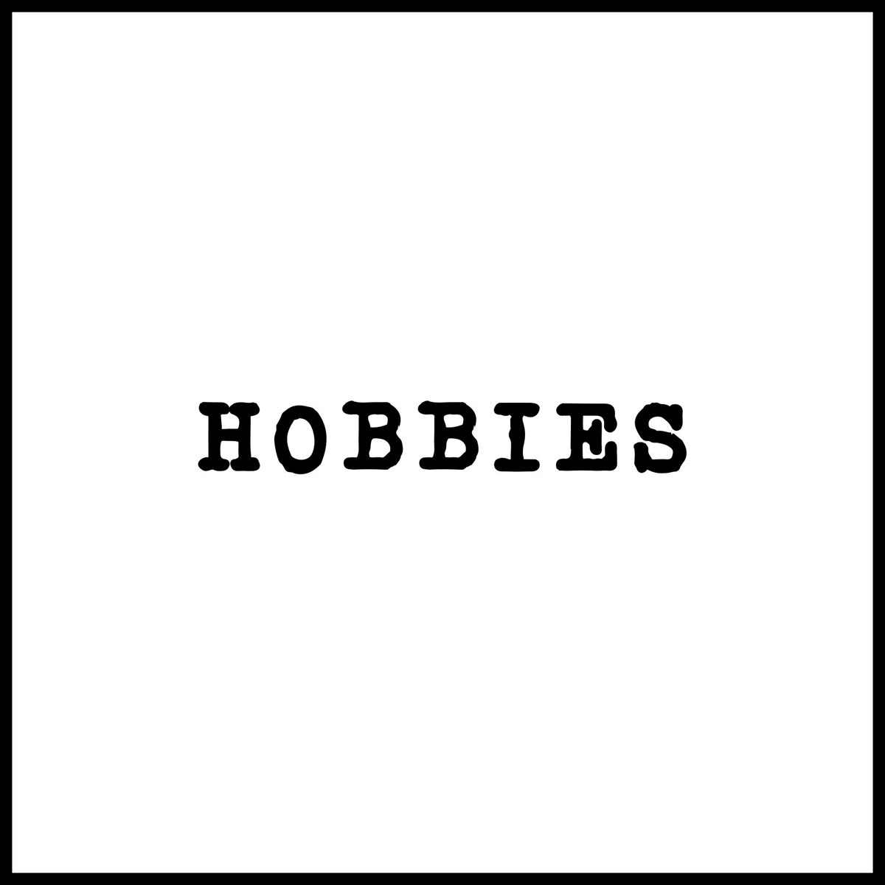

Hi! My name is Alina Kravchenko, and i would love to tell a little bit about myself. I am 19 years old , and I was born in a beautiful city - Baku. Now , I am already a third year student of the ADA University, and studying the Information Technologies. Additionally to that, I do have work. I work in the company name Leznik&Co as a math teacher. I never even thought that i could work in the future as a math teacher, but here I am , doing this work with love and pleasure. It all started in the eleven's grade when I was working there as an intern. The internship lasted about the year and then I started working as a teacher I was always the person for whom everything is not enough, I guess this is the reason why I start working so early , because I was feeling that I need to do and achieve more things.

I am a third year student and studying the Information Technologies. For now I have already passed a lot of courses that gave me the great experience with working with teams, solving the hard problems together, motivation, the help of the instructors in the hard time. This University has a great territory, a park where students can rest, a great canteen with a tasty and different options of food and drinks. There students can find a silent place where they can sit with the thoughts, or studying. As an example of this place can be library, which is one of my favorite places, because there I can sit by myself in a silent and peace and do my own studies or working things.
I am working there now as a math teacher , but everything started in the eleven's grade when I just started there as an intern. This job gave ma already a lot of experience of how to teach , how correctly communicate with children, how correctly explain the mistakes even the small one with patience in order to give the student feeling that here they can ask anything and they will be listened. For now , I am doing it with love and pleasure, when they achieve their own goals by getting a great grade or passing the exam , this is already tells me that I am doing the job in a right way.